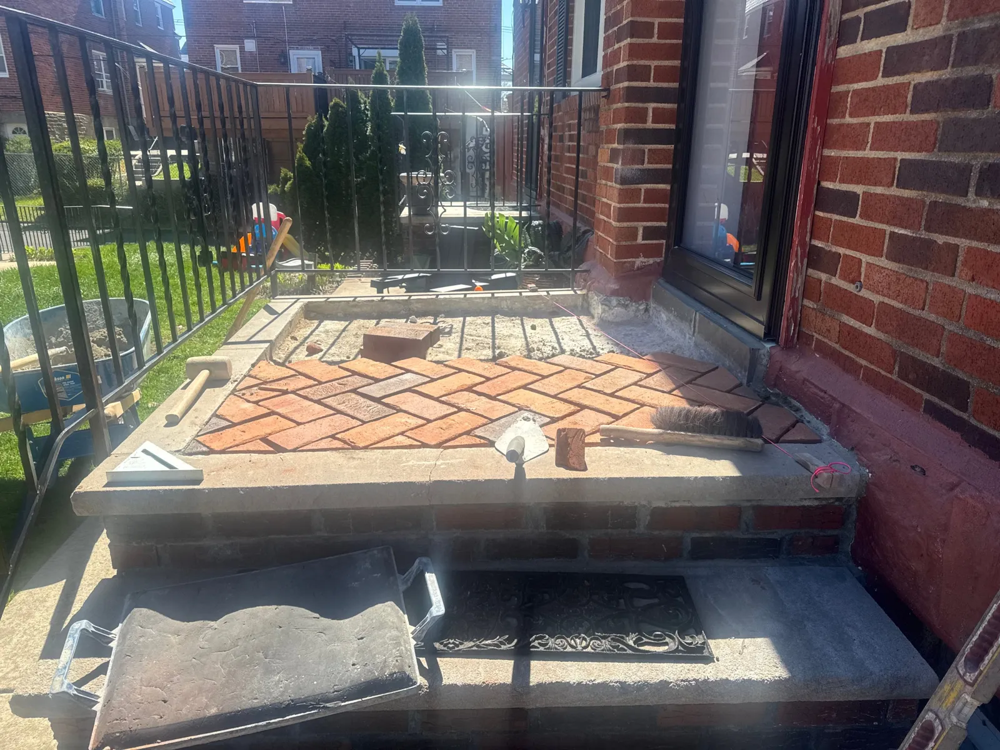
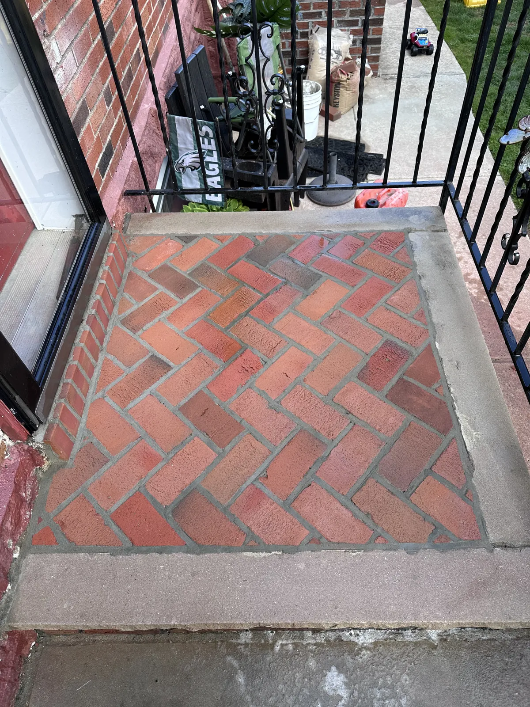

Concrete restoration and repair
Spalled steps, cracked sidewalks and settled slabs repaired to last, plus new flatwork poured and finished to match the block.
Safe to walk on and built to last
Broken concrete is a trip hazard first and an eyesore second. The fix depends on what's happening underneath, so we look at the base before we quote the surface.
Some jobs need a surface repair and a sealer. Others need a section cut out and poured new. Your estimate says which and why, with the finish spelled out so the new work matches what's next to it.

Concrete we repair and pour
Repair
- Spall and crack repair
- Resurfacing
- Joint repair
- Sealing and waterproofing
Rebuild
- Step and stoop rebuilds
- Sidewalk replacement
- Curb cuts and ADA ramps
- Vertical platform lift pads
New flatwork
- Slabs and pads
- Garage and basement floors
- Patios and walkways
- Broom, swirl and stamped finishes
Concrete we've finished

Stoop rebuilt with a herringbone brick inlay inside a concrete border
When concrete needs attention
Most concrete damage starts with water. Fixing it early usually costs less than replacing it later.
- Spalling or flakingThe top layer breaking away exposes the concrete below to more damage.
- Widening cracksCracks that grow or let water in usually point to movement underneath.
- Crumbling edgesStep noses and curb edges that break off are a trip hazard.
- Heaving or sinkingUneven sections create a lip that catches feet and wheels.
- Rust stainsOrange streaks can mean the steel inside is corroding.
- Water poolingStanding water against a foundation means the slope has failed.
From first call to final walkthrough
Tell us about the project
Call, text or send the form with photos if you have them.
Free site visit
We check the surface and the base, measure, and talk through repair or replace.
Itemized quote
Scope, finish, schedule and price, line by line.
Pour and walkthrough
We schedule around the forecast, finish to match and walk it with you.
One crew for the next step too
 Masonry
Masonry Post-construction cleaning
Post-construction cleaningConcrete questions
If your question isn't here, call or text and you'll get a straight answer.
Should I repair or replace my concrete?
If the slab is sound and the damage is on the surface, repair and resurfacing usually make sense. If it's heaved, sunk or cracked through, replacing that section is often the better value. We'll tell you which, and why, at the site visit.
Do you build ADA ramps and curb cuts?
Yes. We build accessible ramps, curb cuts and pads for vertical platform lifts to the spec your project or municipality requires.
Can you match the finish on my block?
Yes. We match broom, swirl and stamped finishes so new sections blend with the sidewalk or steps around them.
How soon can we use it?
We give you exact times for your mix and the weather. As a rule, new concrete takes foot traffic after about a day and vehicles after about a week.
Is concrete work weather-dependent?
Yes. Freezing temperatures and heavy rain affect curing, so we schedule pours around the forecast and tell you right away if a date moves.